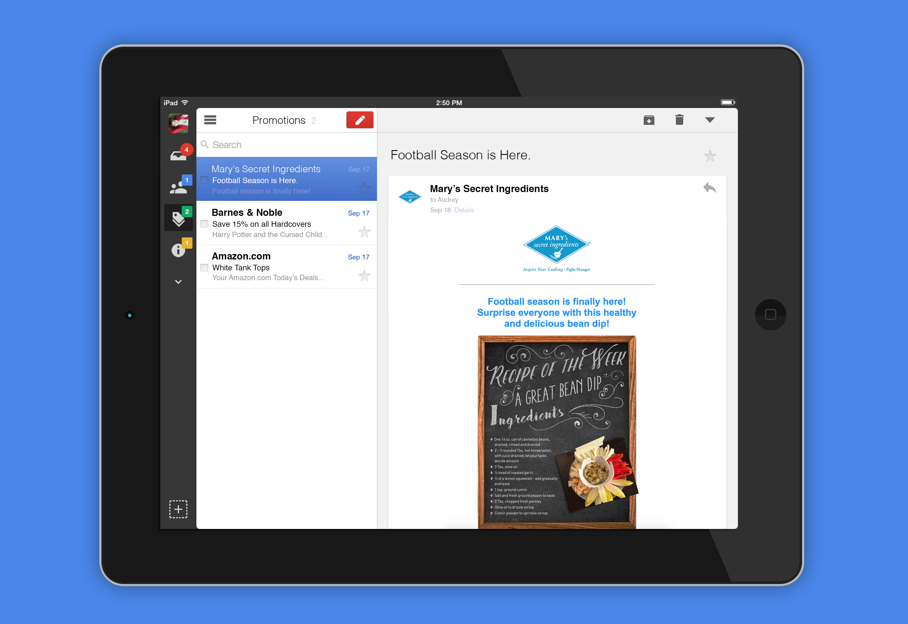
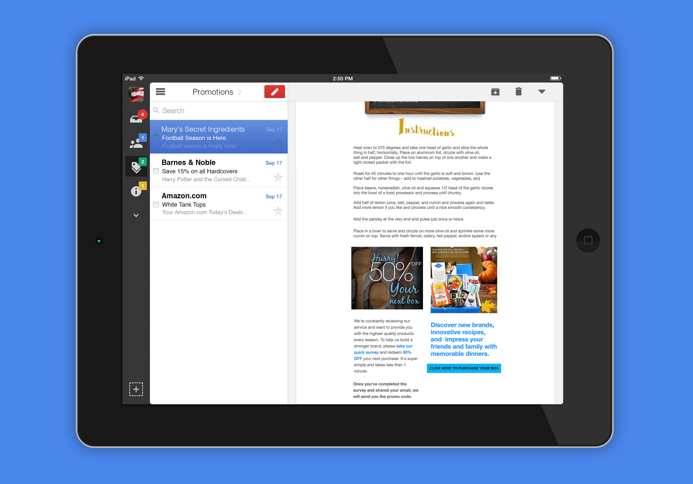

Mary's Secret Ingredients is a culinary box subscription service that sends ingredients and recipes crafted by MSI's founder every season. Each season has it's own special theme that the recipes and ingredients draw inspiration from.

Our e-blasts have a homey look to emphasize Mary's family-style cooking.

For the summer of 2016, we decided to energize our fellow chefs with a sense of adventure. This stop-motion video was created in collaboration with my fellow design intern.